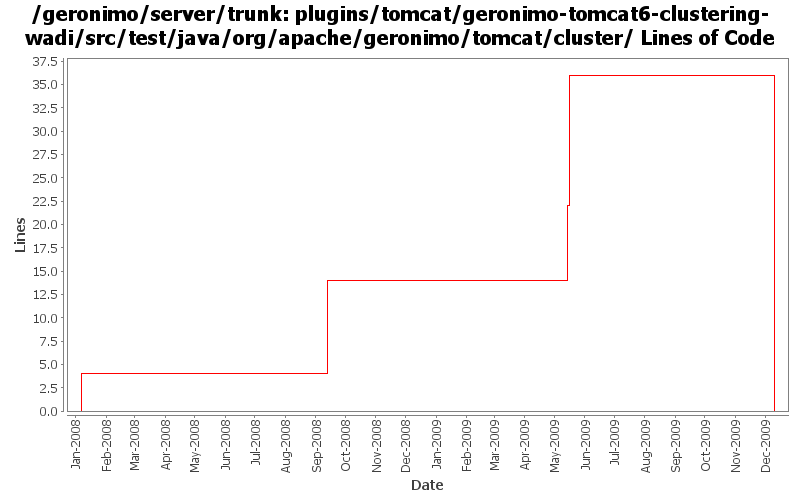

[root]/plugins/tomcat/geronimo-tomcat6-clustering-wadi/src/test/java/org/apache/geronimo/tomcat/cluster

| Author | Changes | Lines of Code | Lines per Change |
|---|---|---|---|
| Totals | 10 (100.0%) | 51 (100.0%) | 5.1 |
| gdamour | 7 (70.0%) | 51 (100.0%) | 7.2 |
| xuhaihong | 3 (30.0%) | 0 (0.0%) | 0.0 |
GERONIMO-4980 Use Tomcat 7 in Geronimo 3.0
0 lines of code changed in 3 files:
The previous attempt to fix the mod_jk integration had a limitation whereby the actual session Id, i.e. the value returned by HttpSession.getId(), was not including the jvmRoute. As a consequence, session stickiness was not properly working when the session Id was encoded in URLs, i.e. when cookies were turned off.
Integration tests with mod_jk have been conducted.
This fixes GERONIMO-4626 - Tomcat Clustering with WADI - JSESSIONID with jvmRoute to support mod_jk routing
25 lines of code changed in 2 files:
Strips and augments requested session IDs with a jvmRoute sets to the name of the processing node. Integration tests with mod_jk are yet to be conducted.
This fixes GERONIMO-4626 - Tomcat Clustering with WADI - JSESSIONID with jvmRoute to support mod_jk routing
10 lines of code changed in 2 files:
GERONIMO-4299 - Session invalidation problem - WADI Tomcat Clustering
Tomcat session has already been removed from its session manager when it is
invalidated. So when WADI calls back when the session it manages is destroyed,
the wrapping Tomcat session may already be unregistered.
12 lines of code changed in 1 file:
* move classes depending on geronimo-clustering from geronimo-tomcat6 to
geronimo-tomcat6-clustering-wadi; and
* remove geronimo-clustering dependency from geronimo-tomcat6.
This way the wadi-clustering config. does not need to be used when
clustering is actually not used.
This fixes GERONIMO-3721 WADI modules prevent Geronimo from starting when
offline.
4 lines of code changed in 2 files: